Does blending weather products beat the best single weather product?
This study uses only Flexpectation's own data, and its purpose is to inform Flexpectation's choices. The study scores each weather product and each blend only at the generators in Flexpectation's trial area in Lincolnshire. The study does not compare results across many regions or climates, so a result on this page may not hold elsewhere.
This study asks which weather data best describes the weather that has already happened. The study does not test weather forecasts. Every product is scored on hours in the past, against what each generator actually produced in those hours. Several of the products are numerical weather prediction (NWP) models: UKV, ICON-D2, ICON-EU, and ICON global. The NWP models are included because this study reads only the first few hours of each NWP run, at lead times of 0 to 6 hours depending on the model, and uses those hours as a stand-in for an analysis: the model's best estimate of the weather at the time the run starts. How well the same NWP models forecast hours or days ahead is a separate question, tracked in #810.
At 6 solar farms and 3 wind farms in Lincolnshire, an XGBoost model given several weather products at once beats an XGBoost model given the best single product, even when the single product is also given its values for the neighbouring hours, the hours either side. Every error here is a mean absolute error as a percentage of each generator's capacity. A difference between two errors is in percentage points of capacity, written "points", and a bracketed pair after a number is its 95% interval. For solar, an XGBoost model given all six products has an error of 4.79% of capacity, against 4.92% for an XGBoost model given CAMS, the Copernicus satellite retrieval, with its neighbouring hours and its split of sunlight into direct beam and diffuse light: 0.13 points better [0.10, 0.17]. At a solar farm with 10 MW of capacity, 0.13 points is 13 kW off a mean absolute error of 492 kW. For wind, an XGBoost model given all five products has an error of 5.76%, against 6.24% for an XGBoost model given the wind of UKV, the Met Office's UK model, with its neighbouring hours: 0.48 points better [0.40, 0.56]. A blend that a live forecasting service could read beats the best single product as well: UKV with ICON-EU, by 0.26 points [0.21, 0.31] for wind. On a longer row set from January 2021, an XGBoost model given CAMS's split and its neighbouring hours plus SARAH-3's global irradiance beats the same model without SARAH-3 by 0.18 points [0.16, 0.21]. All four comparisons above are post hoc, chosen after a first run's results, as "Data and methods" explains. The evidence is 77,616 generator-hours (one generator's output over one hour) at the 6 solar farms from December 2022 to September 2026, and 50,734 generator-hours at the 3 wind farms from August 2024 to September 2026, except the CAMS-with-SARAH-3 section: 115,594 generator-hours from January 2021.
The gain comes from the other products' hour-by-hour weather, not from giving the XGBoost model more columns. A control that keeps the extra columns but replaces their weather with other days' values from the same month does no better than the single product.
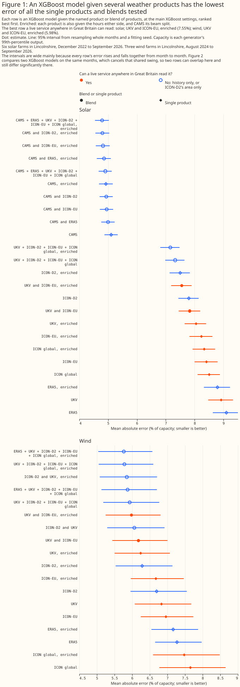
Figure 1 ranks each single product and each blend by its own mean absolute error. Figure 2 tests each named blend against its best single product directly. Figure 1's intervals are wide mainly because every XGBoost model's error rises and falls together from month to month. Figure 2 compares two XGBoost models on the same months and the same fitting seed, the random start an XGBoost model is trained from, which cancels that shared swing, so Figure 2's intervals are much narrower. Two rows can therefore overlap in Figure 1 even where the difference between them, tested directly in Figure 2, is statistically significant at the 5% level. Figure 1 also marks the rows a live service anywhere in Great Britain can read. For both solar and wind the best of those rows is UKV with ICON-EU, each product given its neighbouring hours.
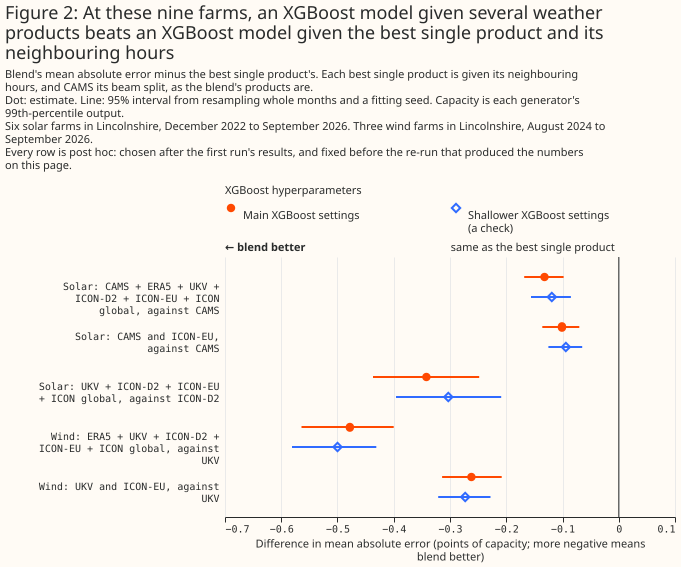
How this page was made. The research question came from a human. Everything else — the code behind every result, the analysis, the figures, and the text — was written by Claude, Anthropic's AI model (for this page, Claude Opus 5.5). Several independent Claude reviewers have checked the method, the evidence, and the prose adversarially.
Key findings
- The XGBoost models behind every comparison track the measured output at every generator.
- For solar, an XGBoost model given all six products beats an XGBoost model given CAMS alone by 0.13 points, and an XGBoost model given the four weather models beats an XGBoost model given ICON-D2 alone by 0.34 points.
- For wind, an XGBoost model given all five products beats an XGBoost model given UKV alone by 0.48 points, and an XGBoost model given UKV and ICON-EU beats UKV alone by 0.26 points.
- The gain comes from the other products' weather: a control given the same columns without their weather does no better than the best single product.
- Every named blend beats its best single product at every generator and in every season.
- The wind gain is spread across every level of output. The study script's report finds that 5% of hours carry 99% of the gain, which reflects hours that improve and hours that worsen netting out.
- An XGBoost model given every product's columns beats a linear stack of single-product predictions, and averaging with CAMS makes the solar error far worse.
- A known small signal, sized to about the solar headline gain, is recovered in full.
- SARAH-3 alone trails CAMS by 0.43 points [0.35, 0.51], but blending the two beats CAMS's split with its own neighbouring hours by 0.18 points [0.16, 0.21] (post hoc) and plain CAMS's split by 0.20 points [0.17, 0.22] (planned), and both gains survive a climatology control.
Introduction
Two earlier pages ranked weather products one at a time, and neither measured whether an XGBoost model given several products at once does better. Which weather product best describes past sunshine? found that CAMS, the Copernicus Atmosphere Monitoring Service's satellite retrieval, describes past sunshine far better than any weather model tested. Which weather product best describes past wind? found that ICON-D2 and UKV describe past hub-height wind best of the five products tested. Both pages scored each product through an XGBoost model fitted per generator to predict hourly output from that product alone.
Several parts of this project read past weather, and each could read a blend instead of one product. The solar page names these consumers of past weather. Training history is the years of past weather that pre-training a forecasting model needs. Historical features give the live forecasting model the weather of hours already past. Capacity estimation infers a generator's size from how its output tracks the weather. Disaggregation separates hidden generation from demand at a substation. This page asks whether an XGBoost model given several products beats an XGBoost model given the best single product, and says which blend, if any, each consumer should read.
The products are the same as on the two earlier pages. The solar products are CAMS; ERA5, the reanalysis of the European Centre for Medium-Range Weather Forecasts (ECMWF); the Met Office's UK variable-resolution model (UKV); and three models of the German weather service (DWD): ICON-D2, which covers Germany and its neighbours, ICON-EU, and ICON global. The four products other than CAMS and ERA5 are weather models, run every few hours. The wind products are the same, less CAMS, which publishes no wind. ICON-D2 does not cover South West England or South Wales. ICON-D2's western edge runs from about 2°W on the south coast to about 2.5°W in the Midlands.

Each blend reads one set of products; the last column says which consumer the set could serve:
| Set | Solar products | Wind products | Why this set |
|---|---|---|---|
| All products | CAMS, ERA5, UKV, ICON-D2, ICON-EU, ICON global | ERA5, UKV, ICON-D2, ICON-EU, ICON global | the most any blend can read |
| CAMS and ICON-D2 | CAMS, ICON-D2 | – | history where ICON-D2 covers |
| CAMS and ICON-EU | CAMS, ICON-EU | – | history anywhere in Great Britain |
| CAMS and ERA5 | CAMS, ERA5 | – | history back to 2004 |
| ICON-D2 and UKV | – | ICON-D2, UKV | the two leaders on the wind page |
| UKV and ICON-EU | UKV, ICON-EU | UKV, ICON-EU | a live service anywhere in Great Britain |
| Four weather models | UKV, ICON-D2, ICON-EU, ICON global | the same | a live service where ICON-D2 covers |
Data and methods
Every comparison is scored on the two earlier studies' own hours, folds, and fitting seeds. Each XGBoost model is trained on some blocks of whole months and scored on the others. Each held-out block is called a fold, and there are five. Each XGBoost model is fitted three times, from three fitting seeds. The solar rows are 77,616 generator-hours at six solar farms, labelled A to F, from 1 December 2022 to 10 September 2026. The wind rows are 50,734 generator-hours at three wind farms, labelled W1 to W3, from 12 August 2024 to 10 September 2026. Each hour is kept only if every product covers it. This study refits every single-product XGBoost model the two earlier pages published: 22 solar and 16 wind combinations of weather columns and hyperparameter setting. Every refit reproduces the published per-hour errors bit for bit, which shows that the hours and the folds are unchanged.
Each XGBoost model is fitted per generator and given the same calendar columns as on the earlier pages, plus the weather columns below. The calendar columns are the time of day, the season, and which side of the Met Office's upgrade of UKV on 21 January 2026 the hour falls on. The solar XGBoost models are also given the sun's position and ERA5's air temperature. Each comparison is between two such XGBoost models, differing only in the weather columns:
- Plain single product: the columns the earlier pages gave one product. Solar: the product's global horizontal irradiance. Wind: the product's hub-height speed, that height's direction as a sine and a cosine, and its 10 m speed.
- Enriched single product: the plain columns plus the extras the solar page found improve one product on its own. Solar: the irradiance in the hour before and the hour after; for CAMS, its beam and diffuse irradiance as well; for UKV, the hour rebuilt as the mean of the snapshots at its start and end. Wind: the hub-height speed 1 and 2 hours either side, and the 10 m speed 1 hour either side.
- Blend: every product in a set, each with its plain columns or each with its enriched columns.
The best single product of a set is the single-product XGBoost model with the lowest error among the set's products. The candidates are every single-product XGBoost model the earlier pages published and every enriched one. For every set containing CAMS the best single product is enriched CAMS, with an error of 4.92%. For the four weather models it is ICON-D2 enriched, at 7.50%. For every wind set it is UKV enriched, at 6.24%, ahead of ICON-D2 enriched at 6.28%. The extra columns matter on their own: enriching UKV lowers its wind error by 0.59 points, and enriching CAMS lowers its solar error by 0.18 points.
Each set is blended four ways:
- XGBoost given every product's columns, the blend this page's headline results describe.
- XGBoost given the products' mean: the mean of the products' values, as the same number of columns as one product has. The wind mean mixes ICON's 80 m speed with the 100 m speed of ERA5 and UKV, which a per-generator XGBoost model can absorb.
- A linear stack: a weighted mean of the single-product XGBoost models' predictions, with weights that are not negative and sum to 1. The weights are fitted per generator, per fitting seed, and per fold, on the other folds only.
- The equal-weight mean of the single-product XGBoost models' predictions.
Each XGBoost blend has a control given the same columns without their weather. The control keeps the best single product's real columns. Every other product's columns are shuffled among the hours sharing a generator, a calendar month, and an hour of the day. The shuffle keeps each month's mean at each hour of the day, and removes the hour-to-hour weather. The blend minus its control measures what the other products' weather adds. The control minus the best single product measures what the extra columns add alone, with no weather in them.
A synthetic product shows that the comparison can detect a gain of the size found. The synthetic product is each hour's measured output as a fraction of capacity, plus random noise drawn once with a fixed seed. The noise has a standard deviation of 0.30 of capacity for solar and 0.45 for wind. The best single product of the all-products set is given the synthetic product as one more column, and a control is given the same column shuffled as above.
Every error is a mean absolute error as a percentage of each generator's own capacity. Capacity here is each generator's 99th percentile of metered output, not its registered or export capacity. A difference between two errors is in percentage points of capacity, written "points".
A bracketed pair after a number is its 95% interval, from resampling whole calendar months and one of the three fitting seeds. A difference whose interval excludes zero is statistically significant at the 5% level. That test covers month-to-month variation in the weather and the choice of fitting seed. It does not cover differences between generators, or between the XGBoost models trained on different folds. Each headline result therefore also carries a t-interval across the five folds' differences and the range of the difference across the generators.
Each comparison is planned, post hoc, or exploratory. A planned comparison is one written into the study plan before the run that measured it. A post hoc comparison is one chosen after the first run's results, and fixed before the re-run that produced the numbers on this page. Every other number is exploratory. The headline comparisons, of each enriched blend against the enriched best single product, are post hoc: the first science review saw the first run's results, found that much of that run's gain was available from one product given its extra columns, and the plan was fixed to compare enriched XGBoost models before the re-run that measured them. The plain comparisons were written into the plan before any result existed, and are reported as secondary.
If no two XGBoost models compared differed, about one exploratory interval in twenty would still be statistically significant at the 5% level by chance. Here 121 of the 139 exploratory intervals exclude zero. The intervals share hours and XGBoost models with one another, so they are not independent tests, and the study script's report quotes no count of how many could be chance.
Every planned or post hoc comparison is also rerun with a shallower, more heavily regularised set of XGBoost settings, to check that a result is not an accident of one choice of settings. The main settings are those the two earlier pages used. The shallower settings drop the maximum tree depth from 6 to 4, raise the regularisation strength, and run 1,200 rounds at a lower learning rate.
Figures 4 and 5's three weeks per generator are chosen by rule, from the weeks in which every generator has at least 4 scored solar hours or 12 scored wind hours on each of the seven days. From those weeks, each figure shows the week with the highest mean output, the week with the lowest mean output, and the most variable week: for solar, the week with the largest day-to-day spread in daily mean output; for wind, the week with the largest mean hour-to-hour change.
Results
The XGBoost models track the measured output
The XGBoost models given the best single product, and those given every product, follow the measured output hour by hour at every generator, in weeks chosen by rule. Figures 4 and 5 show three weeks at each generator: the week with the highest mean output, the most variable week, and the week with the lowest mean output. Each XGBoost model's prediction is out of fold, so the hours it predicts were held out of its training. The prediction shown is the mean over the three fitting seeds.
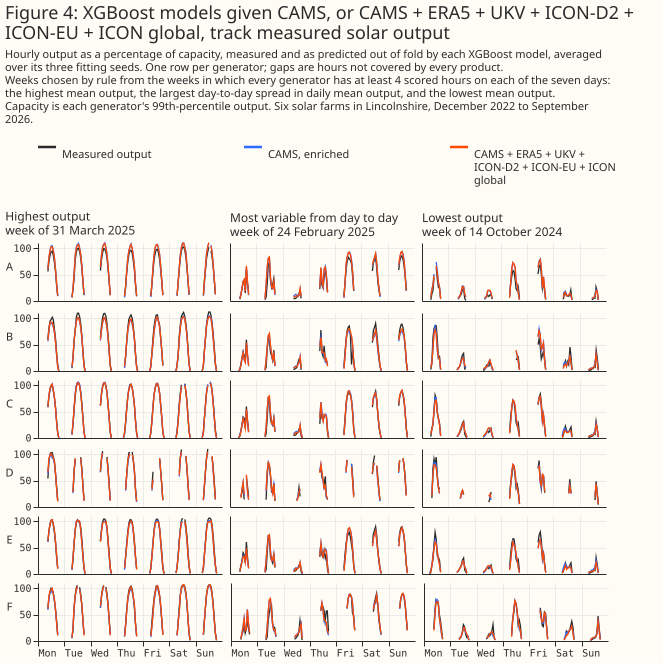
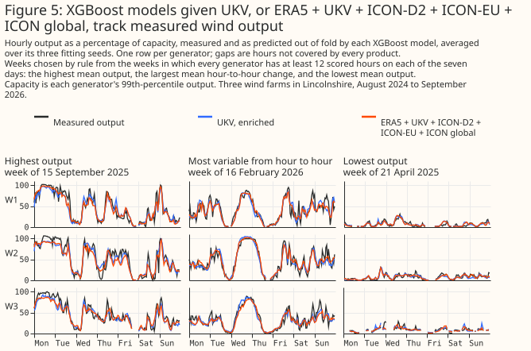
The blend's error is lower than the best single product's at every generator, for every set in Figure 6. The errors range from about 4% of capacity at the best solar farm to about 9% for the four weather models at the worst. Generator W3's output swings for months at a time against every product's wind, which the wind page attributes to turbine availability the feed does not record.
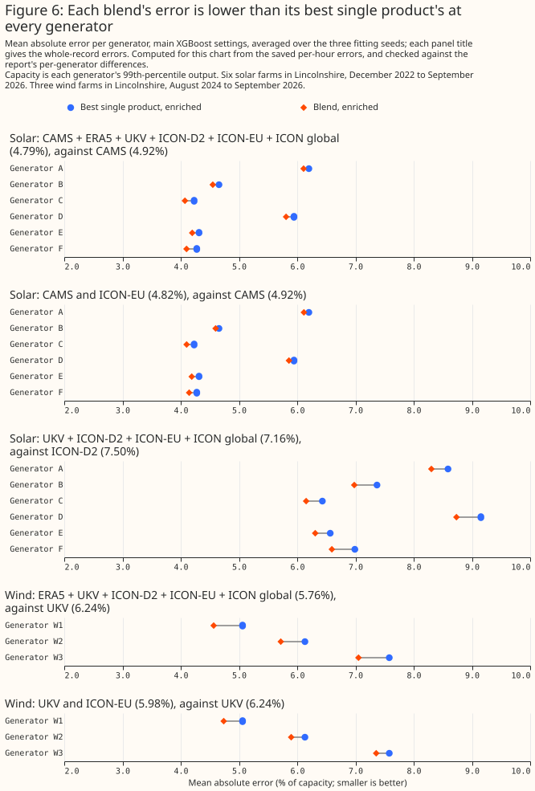
Solar: a blend beats CAMS given its neighbouring hours
An XGBoost model given all six products beats an XGBoost model given enriched CAMS by 0.13 points [0.10, 0.17], 2.7% of CAMS's error, in a post hoc comparison. The t-interval across the five folds is [0.09, 0.18], and the gain at each generator ranges from 0.09 to 0.18 points. With the shallower settings the gain is 0.12 points [0.09, 0.16].
CAMS with ICON-EU alone gives most of that gain: 0.10 points [0.07, 0.14] over enriched CAMS, in a post hoc comparison. The t-interval across the folds is [0.06, 0.15], and the per-generator gain ranges from 0.06 to 0.13 points. In exploratory comparisons, CAMS with ICON-D2 gains 0.12 points [0.09, 0.15], and CAMS with ERA5 0.07 points [0.04, 0.10].
Among the weather models alone, an XGBoost model given all four beats an XGBoost model given enriched ICON-D2 by 0.34 points [0.25, 0.44], 4.5% of ICON-D2's error, in a post hoc comparison. The t-interval across the folds is [0.22, 0.48], and the per-generator gain ranges from 0.26 to 0.42 points. With the shallower settings the gain is 0.30 points [0.21, 0.40]. In an exploratory comparison, UKV with ICON-EU beats enriched UKV by 0.50 points [0.41, 0.58].
The plain comparisons, planned before the first run, show larger gains because their single product lacks the extra columns. Against plain CAMS, an XGBoost model given all six products' plain columns gains 0.20 points [0.16, 0.24]. Against plain ICON-D2, an XGBoost model given the four weather models' plain columns gains 0.47 points [0.40, 0.55].
Wind: a blend beats UKV given its neighbouring hours
An XGBoost model given all five products beats an XGBoost model given enriched UKV by 0.48 points [0.40, 0.56], 7.7% of UKV's error, in a post hoc comparison. The t-interval across the five folds is [0.33, 0.59], and the gain at each generator ranges from 0.41 to 0.53 points. With the shallower settings the gain is 0.50 points [0.43, 0.58].
UKV with ICON-EU beats enriched UKV by 0.26 points [0.21, 0.31], 4.2% of UKV's error, in a post hoc comparison. The t-interval across the folds is [0.16, 0.34], and the per-generator gain ranges from 0.23 to 0.32 points. With the shallower settings the gain is 0.27 points [0.23, 0.32]. In exploratory comparisons, the four weather models beat enriched UKV by 0.46 points [0.39, 0.54], and ICON-D2 with UKV by 0.39 points [0.32, 0.46].
The plain comparisons, planned before the first run, again show larger gains. Against plain ICON-D2, the best plain wind product, all five products' plain columns gain 0.82 points [0.74, 0.90]. Against plain UKV, UKV with ICON-EU gains 0.65 points [0.59, 0.72].
The gain comes from the other products' weather
For every named blend, the blend beats its control, and the control does no better than the best single product. Figure 7 splits each blend's gain in two. For all six solar products, the blend beats its control by 0.20 points [0.17, 0.23], and the control is 0.07 points worse than enriched CAMS [0.05, 0.09]. For all five wind products, the blend beats its control by 0.53 points [0.46, 0.62], and the control is 0.06 points worse than enriched UKV [0.02, 0.09]. For UKV with ICON-EU, the control's difference from enriched UKV is not statistically significant at the 5% level (0.02 points worse [−0.01, +0.04]). All of these comparisons are post hoc.
Extra columns without weather make the XGBoost model slightly worse, so the blend's gain over its control is larger than its gain over the best single product. The control keeps each month's mean at each hour, which carries a little real information, so a blend's gain over its control is if anything understated.
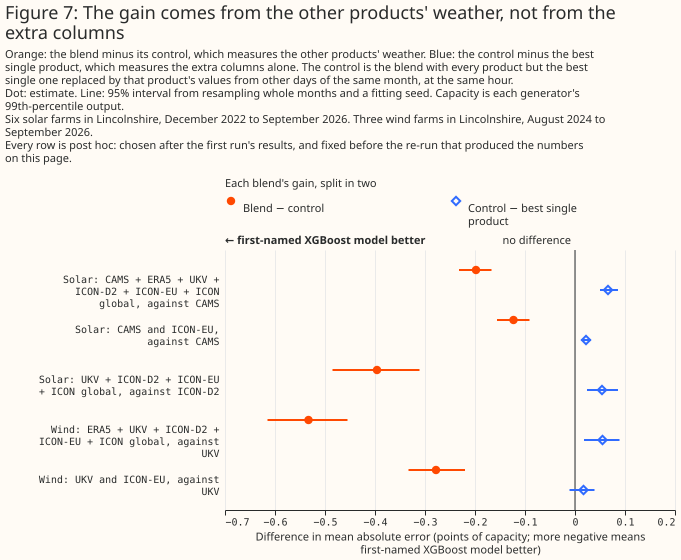
The gain holds at every generator and in every season
Each named blend beats its best single product at each of its farms, in each of the four seasons, and on each side of UKV's January 2026 upgrade. The solar blends are scored at the 6 solar farms and the wind blends at the 3 wind farms. All 54 of these exploratory intervals are statistically significant at the 5% level, and so are all 54 intervals of each blend against its control. The splits share hours and XGBoost models with the whole-record results and with one another, so they are not independent tests.
The solar gain is smallest from June to August, and the wind gain holds in every season. An XGBoost model given all six products beats enriched CAMS by 0.09 points [0.03, 0.15] from June to August, and by 0.20 points [0.11, 0.28] from December to February. All five wind products beat enriched UKV by 0.39 to 0.58 points in each season. Since UKV's upgrade the solar gain is 0.07 points [0.03, 0.12] and the wind gain 0.40 points [0.33, 0.50], each resting on 8 months.
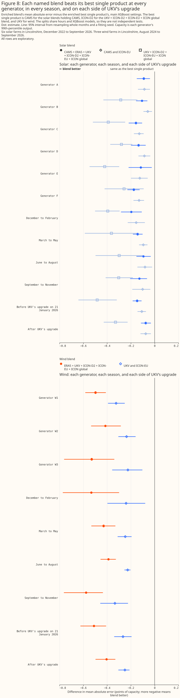
The wind gain is spread across every level of output
The wind blends beat enriched UKV in every band of measured output, and most of the net gain sits in hours below half of capacity. All five products gain 0.26 points in the hours below a tenth of capacity, which are 36% of the hours, and 0.725 to 0.828 points in each band above 0.3 of capacity. The three bands below half of capacity carry 19%, 33%, and 24% of the net gain, so the hours below 0.3 of capacity carry 52%, and the hours above 0.9 carry 4%. The top panel of Figure 9 shows each band.
The study script's report states that the most-improved 5% of hours carry 99% of the gain, which describes gains and losses netting out, not a gain confined to a few hours. Of the hours, 56% improve and 44% worsen. Sorting the hours from most improved to most worsened, the running sum of the improvement passes the net gain after about 5% of hours, rises to 2.93 times the net gain where the improving hours end, and falls back as the worsening hours are added. So the other 95% of hours net to about 1% of the gain. For UKV with ICON-EU the most-improved 5% carry 143% of the net gain, and the running sum rises to 4.06 times the net gain before the other 95% of hours bring it back down. The bottom panel of Figure 9 shows both running sums.
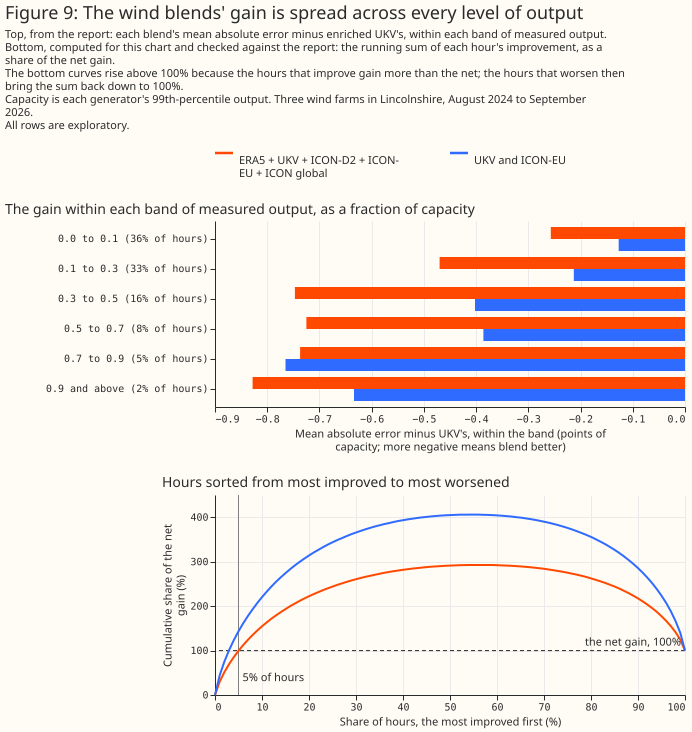
An XGBoost blend beats a linear stack and simple averages
An XGBoost model given every product's columns beats a linear stack of the single-product XGBoost models, by 0.07 points for solar [0.05, 0.10] and 0.10 points for wind [0.05, 0.16], in post hoc comparisons. For wind the t-interval across the folds, [−0.01, +0.19], includes zero, so the wind result rests on the month resampling alone. With the shallower settings the wind difference is 0.11 points [0.06, 0.17], with a fold t-interval of [0.03, 0.18]. The stack still beats the best single product for both solar and wind: by 0.06 points [0.03, 0.10] for all six solar products, and 0.38 points [0.32, 0.43] for all five wind products, in exploratory comparisons.
Averaging CAMS with the other solar products makes the error far worse, because CAMS is far better than every other product. For all six solar products, the XGBoost model given the products' mean is 1.65 points worse than enriched CAMS [1.48, 1.81], and the equal-weight mean of the predictions is 1.78 points worse [1.61, 1.96]. For wind, both averages of UKV and ICON-EU beat enriched UKV, by 0.22 points each. All of these comparisons are exploratory.
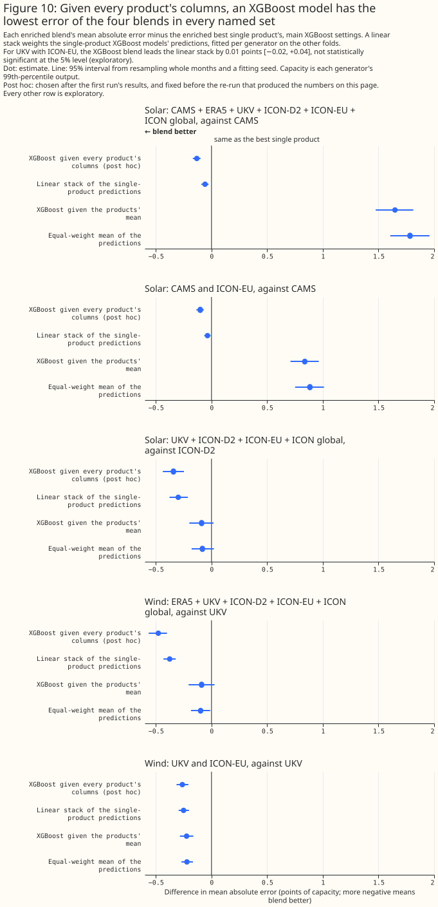
The XGBoost blend has the lowest error of the four blends in every named set. For UKV with ICON-EU the XGBoost blend leads the linear stack by 0.01 points [−0.02, +0.04], which is not statistically significant at the 5% level (exploratory). The linear stack weights CAMS heavily for solar and splits the wind weight between UKV and ICON-D2. For all six solar products the stack's mean weight on enriched CAMS is 0.85, and no other product's exceeds 0.07. For all five wind products the mean weights are 0.43 on UKV, 0.37 on ICON-D2, 0.12 on ICON-EU, 0.06 on ERA5, and 0.02 on ICON global. Across folds each weight moves by 0.031 or less on average.
Fitting the stack's weights on the scored fold as well would flatter the stack by at most 0.02 points. The report prints that in-sample gap for every stack, from 0.002 to 0.020 points. Stacking one product's three fitting seeds, which isolates what averaging XGBoost models alone contributes, gains about 0.01 points.
A known small signal is recovered in full
The comparison recovers in full a synthetic gain planted at about the size of the solar headline gain. The noise was sized on a pilot fit. Given the synthetic product, an XGBoost model beats the best single product by 0.14 points for solar [0.11, 0.16] and 0.14 points for wind [0.10, 0.19], with all five folds agreeing, in exploratory comparisons. Against its shuffled control the gain is 0.15 points for solar and 0.14 points for wind (exploratory). Because the noise level was chosen to target the headline gain's size, this comparison shows the pipeline can recover a known gain of that size. The comparison does not independently confirm the headline gain's magnitude. A comparison where a large gain is known to exist, CAMS with ICON-D2 against ICON-D2 alone, shows a gain of 2.86 points [2.64, 3.08] (exploratory).
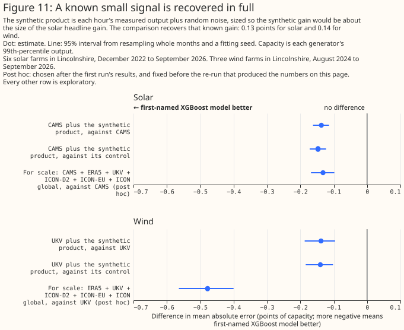
Blending CAMS with SARAH-3 beats CAMS's own split
An XGBoost model given CAMS's split plus SARAH-3's global irradiance beats an XGBoost model given CAMS's split with its own neighbouring hours by 0.18 points [0.16, 0.21] (post hoc), and beats plain CAMS's split by 0.20 points [0.17, 0.22] (planned); both gains survive a climatology control. Which weather product best describes past sunshine? found CAMS the best single product and SARAH-3, the satellite climate data record from EUMETSAT's Satellite Application Facility on Climate Monitoring (CM SAF), the best of the rest, 0.43 points behind [0.35, 0.51] on these rows, for a reason the page could not identify. The two retrievals build their hourly value differently — CAMS integrates over the hour itself, while SARAH-3's hourly value here is this study's mean of SARAH-3's two 30-minute snapshots stamped at the start and middle of the hour — and apply different cloud retrievals and clear-sky models to images from the same Meteosat satellites (every 15-minute scan for CAMS, every 30-minute scan for SARAH-3), so SARAH-3's errors may be partly independent of CAMS's even though SARAH-3 is the weaker product alone, the same way ICON-EU added information to CAMS above despite being a weaker single product for solar. This section tests that independence directly.
The rows are the past-solar page's record panel: 115,594 common site-hours at the same 6 solar farms, labelled A to F, from 1 January 2021 to 31 August 2026, the longer row set that page uses for its SARAH-3 comparison. This row set is not the 77,616-row set the rest of this page scores: it holds four products only — CAMS, SARAH-3, ERA5, and ICON-DREAM-EU, DWD's reanalysis over Europe — starting in January 2021 rather than December 2022, so none of the numbers in this section are comparable in absolute terms to the headline results above. Before any blend was fitted, refits of CAMS's split, CAMS alone, and SARAH-3 alone were checked row for row against the past-solar page's own saved errors on this row set, and matched them bit for bit on all 346,782 scored rows (115,594 rows times three fitting seeds).
Every comparison reads the record panel's calendar and sun-position columns plus one set of weather columns. CAMS's split with SARAH-3 carries CAMS's global, direct-beam and diffuse irradiance plus SARAH-3's global irradiance; its climatology control carries the same columns with SARAH-3's global irradiance permuted within a generator, a calendar month, and an hour of day, which keeps each month's climatology at each hour but removes SARAH-3's hour-by-hour values. Two more comparisons repeat the same blend and control on CAMS's and SARAH-3's global irradiance alone, without CAMS's split, so the two products contribute the same kind of column: a matched comparison of like columns (exploratory).
A third, post hoc reference enriches CAMS's split with its own neighbouring hours, blended with SARAH-3 and tested against both that reference and its own climatology control. CAMS's split with its own neighbouring hours — the hour before and the hour after, read separately from CAMS's own download — was added after the first science review found this section's reference lacked the extras every other single-product reference on this page carries.
Two more comparisons are exploratory: a single averaged column, and two negative controls pairing CAMS with a noised copy of itself. An XGBoost model given the mean of CAMS's and SARAH-3's global irradiance as a single column is exploratory too, distinct from the linear stack and the equal-weight average, which are built from the single-product models' own out-of-fold predictions rather than from a shared column; all three are built on the two products' global irradiance only, since this study reads no split for SARAH-3. CM SAF does publish a direct/diffuse split for SARAH-3, modelled from its own global irradiance rather than retrieved independently, as the past-solar page explains, so it is not scored here. Two negative controls pair CAMS with a noised copy of itself: one noised at 48.2 W/m2, the measured root-mean-square difference between CAMS's and SARAH-3's global irradiance on these rows, so its two columns differ from each other about as much as the two products genuinely do; the other noised at a fixed 5 W/m2, close to a duplicate column.
Two comparisons were written into the study plan before any result existed, as the git history shows: CAMS's split with SARAH-3 against CAMS's split alone, and against the climatology control. Both are refitted at a second, more heavily regularised XGBoost setting to check the result is not an accident of one choice of settings. CAMS's split with its own neighbouring hours plus SARAH-3, against that enriched reference and against its own climatology control, is post hoc, added after the first science review, and is refitted at the second setting too. Every other number in this section is exploratory.
Both planned comparisons are statistically significant at the 5% level, at both settings, and so are both post hoc comparisons against the enriched reference. Against CAMS's split with its own neighbouring hours, CAMS's split with its own neighbouring hours plus SARAH-3 gains 0.18 points [0.16, 0.21] at the main setting and 0.18 points [0.16, 0.21] at the second setting (post hoc); the t-interval across the five folds is [0.14, 0.22]. It beats its own climatology control by 0.20 points [0.17, 0.22] at the main setting and 0.19 points [0.17, 0.22] at the second setting (t-interval [0.16, 0.23]). Against plain CAMS's split, the planned comparison gains 0.20 points [0.17, 0.22] at the main setting and 0.19 points [0.17, 0.22] at the second setting (t-interval [0.15, 0.24]), and beats the climatology control by 0.21 points [0.19, 0.24] and 0.21 points [0.18, 0.23] (t-interval [0.17, 0.25]). Since each blend beats its own control by about as much as it beats its own reference, most of the gain comes from SARAH-3's hour-by-hour values rather than from the extra column alone.
Part of the gain looks like two retrievals of the same cloud images averaging out each other's errors, since a single averaged column already gains as much as CAMS's own split does. A single column averaging CAMS's and SARAH-3's global irradiance already gains 0.12 points [0.09, 0.16] over CAMS (exploratory), as much as CAMS's own split gives CAMS (0.12 points, exploratory). That suggests part of the gain may come from two retrievals of the same images averaging out each other's errors, or from two footprints of the same cloud field: CAMS is interpolated from satellite pixels about 5 km across, and SARAH-3 is read from a 0.05° grid cell 0.8 to 2.8 km away from CAMS's own point, so the two rarely see exactly the same patch of cloud. No comparison here separates that spatial averaging from weather one retrieval sees and the other misses.
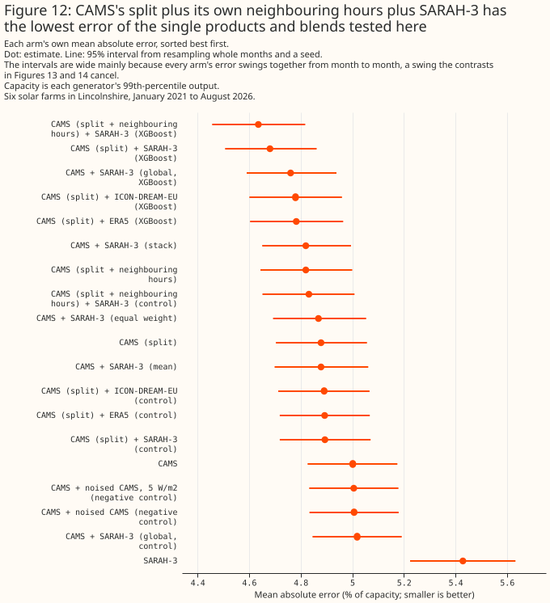
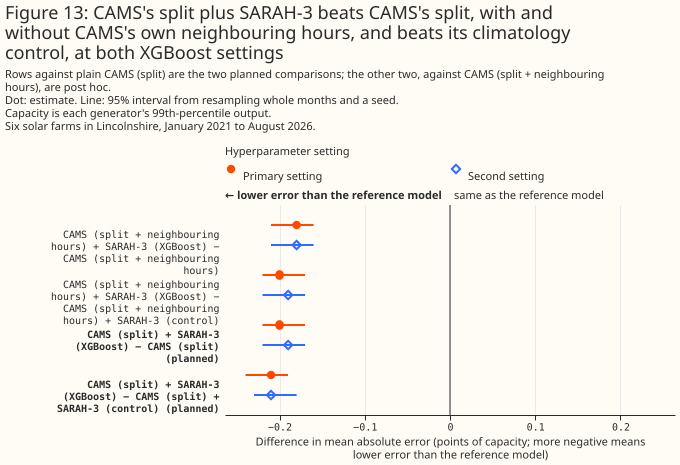
The gain holds at every generator, in every clearness band, and in every year since 2021, though its size varies. Broken down by generator, CAMS's split with SARAH-3 beats CAMS's split by 0.10 to 0.48 points, largest at generator D, which holds 13% of the rows and 32% of this contrast's total gain, for a reason this study did not investigate; excluding generator D the gain is 0.15 points [0.13, 0.18]. Every one of these 6 breakdowns is statistically significant at the 5% level. Broken down by CAMS's and SARAH-3's mean clearness index (overcast: below 0.3, broken cloud: 0.3 to 0.6, clear: 0.6 and above), the gain is 0.15 points [0.12, 0.19] in overcast hours, 0.20 points [0.17, 0.23] in broken cloud, and 0.24 points [0.19, 0.28] in clear hours; as a share of CAMS's split's own error in each band the gain sits in a narrow band throughout — 5.0% overcast, 3.7% broken cloud, 4.0% clear. Broken down by calendar year, restricted to January–August so a partial 2026 compares against the same months of every complete year, the gain ranges from 0.18 to 0.28 points and is statistically significant every year. These breakdowns share hours and XGBoost models with the whole-record result and with one another, so they are not independent tests. Resampling the six generators with replacement instead of the months gives a wider but still positive interval: 0.20 points [0.13, 0.31] for the planned comparison and 0.18 points [0.12, 0.30] against CAMS's split with its own neighbouring hours (both exploratory), and every one of the 68 scored months gains for both comparisons.
The gain does not grow with CAMS's own hour-to-hour ramp, which argues against a timing mismatch in CAMS's own hourly convention as its source; the reference already gives the XGBoost model CAMS's neighbouring hours, which such a mismatch would need to explain the gain. Against CAMS's split with its own neighbouring hours, the gain is 0.21 points [0.17, 0.25] in the calmest fifth of hours (CAMS's own irradiance changing least from the hour before to the hour after) and 0.16 points [0.13, 0.20] in the steepest fifth (exploratory), the opposite of what a fix to CAMS's own timing convention would predict. The gain is larger where CAMS and SARAH-3 disagree most: 0.53 points [0.45, 0.62] in the fifth of hours where the two differ most (exploratory), though that comparison is close to mechanical — where SARAH-3 equals CAMS, blending it in cannot change the prediction — so it is weak evidence of genuine disagreement between the retrievals rather than support for it. A least-squares fit of SARAH-3's global irradiance on CAMS's own hour and its immediate neighbours, restricted to daytime hours, gives SARAH-3 ≈ 0.82·CAMS(t) + 0.12·CAMS(t−1) + 0.07·CAMS(t+1): SARAH-3 leans towards CAMS's own hour, not towards a shifted one, which points at a genuine disagreement between the two retrievals rather than a timing mismatch between the two hourly values as this study builds them.
An XGBoost model given only CAMS's and SARAH-3's global irradiance beats CAMS's split by 0.12 points, less than the 0.20 points CAMS's split with SARAH-3 gains over the same reference. CAMS with SARAH-3, both global, beats CAMS alone by 0.24 points [0.21, 0.27] and its own climatology control by 0.26 points [0.23, 0.29] (exploratory). Against CAMS's split, rather than plain CAMS, the all-global blend's gain is smaller: 0.12 points [0.09, 0.15] (exploratory), and adding CAMS's own split on top of the all-global blend gains a further 0.08 points [0.06, 0.10] (exploratory), which by construction sum to the 0.20-point gain the planned comparison finds directly against CAMS's split. Against CAMS, the mean of the two products' global irradiance gains 0.12 points [0.09, 0.16] (as above), the linear stack 0.18 points [0.16, 0.21], and the equal-weight average 0.13 points [0.10, 0.17], all exploratory and all smaller than the XGBoost blend's gain.
Both negative controls show the pipeline does not manufacture a gain from an uninformative second column. CAMS paired with a copy of itself noised to match the measured CAMS/SARAH-3 gap is 0.01 points worse than CAMS alone [0.00, 0.01], which is statistically significant but in the wrong direction to explain a gain. The matched comparison, CAMS plus SARAH-3's global irradiance against CAMS alone, gains 0.24 points [0.21, 0.27]. CAMS paired with a copy of itself noised at a fixed 5 W/m2, close to a duplicate column, is not statistically significant at the 5% level (0.00 points [−0.00, +0.01]). Neither control comes close to the size or the sign of the gain SARAH-3 itself adds.
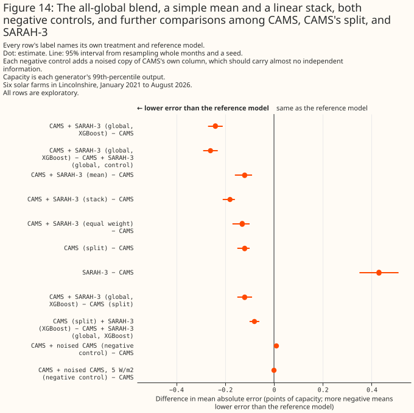
Neither ERA5 nor ICON-DREAM-EU, the two other products on these rows, adds as much to CAMS's split as SARAH-3 does. ERA5 and ICON-DREAM-EU each cover the same rows as SARAH-3, so both can be blended with CAMS's split the same way, each with its own climatology control. CAMS's split with ERA5 gains 0.10 points [0.08, 0.12] over plain CAMS's split and 0.11 points [0.09, 0.13] over its own control; CAMS's split with ICON-DREAM-EU gains 0.10 points [0.08, 0.12] and 0.11 points [0.09, 0.13] (all post hoc). Both gains are statistically significant at the 5% level, and each is about half of SARAH-3's 0.20-point gain over the same reference. A direct paired test, added for this review, confirms it: CAMS's split with SARAH-3 beats CAMS's split with ERA5 by 0.10 points [0.07, 0.13] and CAMS's split with ICON-DREAM-EU by 0.10 points [0.07, 0.13] (post hoc). SARAH-3's gain over CAMS's split is about twice that of either weather product on the same rows. A direct paired test also confirms CAMS's split beats SARAH-3 alone: by 0.55 points [0.48, 0.62] (post hoc).
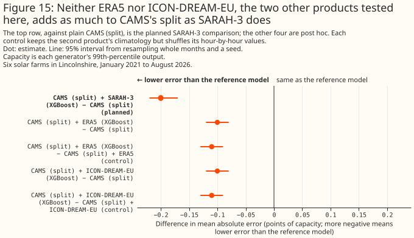
What to use
A blend waits for its slowest product, plus one hour (solar) or two hours (wind) for its own neighbouring hours. The consumer therefore decides which sets are available at all. The table gives each set's latency, which consumers can read it, and the first scored hour.
| Solar or wind | Set | Available after | Live anywhere in Great Britain? | Includes a history-only product (CAMS, ERA5, or SARAH-3)? | Needs ICON-D2's domain? | Archive serves every product from | Scored hours start |
|---|---|---|---|---|---|---|---|
| Solar | CAMS and ICON-D2 | about 1 day | no | yes | yes | December 2022 | 1 December 2022 |
| Solar | CAMS and ICON-EU | about 1 day | no | yes | no | November 2022 | 1 December 2022 |
| Solar | CAMS and ERA5 | about 5 days | no | yes | no | January 2004 | 1 December 2022 |
| Solar | UKV and ICON-EU | about 5 hours | yes | no | no | November 2022 | 1 December 2022 |
| Solar | Four weather models | about 5 hours | no | no | yes | December 2022 | 1 December 2022 |
| Solar | All six products | about 5 days | no | yes | yes | December 2022 | 1 December 2022 |
| Wind | ICON-D2 and UKV | about 6 hours | no | no | yes | August 2024 | 12 August 2024 |
| Wind | UKV and ICON-EU | about 6 hours | yes | no | no | August 2024 | 12 August 2024 |
| Wind | Four weather models | about 6 hours | no | no | yes | August 2024 | 12 August 2024 |
| Wind | All five products | about 5.1 days | no | yes | yes | August 2024 | 12 August 2024 |
| Solar | CAMS and SARAH-3 | about 2 to 5 days (SARAH-3's delay, from this project's own tracking) | no | yes | no | 2004 (CAMS's start; SARAH-3 from 1983, as its Climate Data Record to 2020 and its Interim Climate Data Record from January 2021) | 1 January 2021 |
These recommendations rest on 6 solar farms and 3 wind farms in one part of Lincolnshire, over less than 4 years for solar and 2 years for wind.
- Historical features in the live service: UKV with ICON-EU, anywhere in Great Britain; the four weather models where ICON-D2 covers. UKV with ICON-EU beats enriched UKV by 0.26 points for wind (post hoc) and 0.50 points for solar (exploratory). Inside ICON-D2's domain the four weather models beat the best single weather model by 0.34 points for solar (post hoc) and 0.46 points for wind (exploratory). A live blend needs every product at run time, so a blend has more products that can go missing, and under this project's inherent stability rules each needs a fallback. Every result here scores the archive's freshest run for each hour, and at run time the last few hours come from an older run.
- Training history: CAMS with ICON-EU for solar anywhere in Great Britain from December 2022, or all products where ICON-D2 covers, is the recommendation this study's own planned comparisons support; where CAMS and SARAH-3 both cover the training period, the evidence favours CAMS with SARAH-3 as the stronger candidate, though that comparison is exploratory. For solar, all six products beat enriched CAMS by 0.13 points, and CAMS with ICON-EU by 0.10 points, both post hoc. For wind, all five products beat enriched UKV by 0.48 points (post hoc), but UKV's hub-height wind starts only in August 2024, so the wind blends say nothing about training history before that. CAMS with ERA5 reaches back to 2004 for a gain of 0.07 points (exploratory), measured only from December 2022. CAMS with SARAH-3 also gains 0.20 points [0.17, 0.22] over plain CAMS's own split (planned) and 0.18 points [0.16, 0.21] over CAMS's split with its own neighbouring hours (post hoc). This gain comes from a different row set, longer but holding four products, from January 2021, so the two blends were not fitted on the same rows. On the 76,727 site-hours the two studies share, each blend's gain over its own study's CAMS's split with its own neighbouring hours is 0.19 points [0.16, 0.23] for CAMS with SARAH-3, 0.13 points [0.10, 0.17] for all six products, and 0.10 points [0.07, 0.13] for CAMS with ICON-EU (exploratory): CAMS with SARAH-3 gave the larger gain, by 0.06 points [0.01, 0.10] over the six-product blend. On these shared hours this study's reference model, trained on the longer row set from January 2021, has 0.16 points [0.07, 0.27] lower error than the blending study's, so only each blend's own gain over its own reference compares across the studies. The comparison is exploratory, and it cannot separate SARAH-3's contribution from the longer training history the CAMS-with-SARAH-3 models had. Both products take their clouds from satellite images rather than from a weather model, and neither ERA5 nor ICON-DREAM-EU, the two other second products tested, gains as much as SARAH-3 does. Before 2021 SARAH-3 comes from its Climate Data Record rather than the Interim Climate Data Record scored here, and the blend is untested there. SARAH-3 is available only by a manual order from CM SAF, so a training pipeline reading it cannot fetch new months automatically. No blend of CAMS and SARAH-3 with a third product, such as ICON-EU, was tested.
- Capacity estimation and disaggregation: no recommendation. Both have to read a product's weather without an XGBoost model fitted to the generator's own output, and every gain here exists only after an XGBoost model is fitted to that generator's output. The single-product recommendations on the solar and wind pages stand.
Limitations
- Region and period. The study covers 6 solar farms inside one 25 km by 23 km box, and 3 wind farms in flat country, all in Lincolnshire. The solar hours run from December 2022 (from January 2021 in the CAMS-with-SARAH-3 section) and the wind hours from August 2024. Nothing here speaks to other regions, to terrain, or to offshore wind.
- The intervals cover weather and fitting seeds, not generators or folds. The per-generator range and the fold t-interval beside each headline show those two sources separately. With three wind farms, a fourth could rank the blends differently.
- The headline comparisons were written after the first science review. The review saw the first run's results before asking for the enriched comparisons, so the choice of extras was informed by results, though not by the enriched blends' own results.
- The enriched best single product may not be the best single product possible. The extras are the ones the solar page found useful. A single product given further columns, such as more neighbouring hours or its neighbouring grid cells, might close part of the gap.
- The linear stack's weights are fitted on out-of-fold predictions from XGBoost models trained on the scored fold's months. This second-order leak is standard in cross-validated stacking, and would favour the stack, and the XGBoost blend still matches or beats the stack. The interval treats the weights as fixed.
- The weather models and ERA5 are read from Open-Meteo's archive, at the served lead the earlier pages describe; CAMS, SARAH-3, and ICON-DREAM-EU are not. CAMS is read from the Copernicus Atmosphere Monitoring Service's own radiation service, SARAH-3 from CM SAF's own gridded files, and ICON-DREAM-EU from DWD's own gridded files. UKV's values are its analysis (T+0); ICON-D2's and ICON-EU's are forecasts made 1 to 3 hours before each hour, ICON global's 1 to 6 hours, and ICON-DREAM-EU's the same as ICON-EU; ERA5's come from forecasts 1 to 12 hours old. A blend's gain at the leads a live forecast uses is not measured here.
- The results rest on the
effective_capacitytable as rebuilt in September 2026, and on version 3 of the power Delta table. A rebuilt capacity table would move every number. - Open-Meteo's UKV solar archive before 12 August 2024 is a backfill from a source Open-Meteo does not name. Every set reading UKV, including UKV with ICON-EU, spans that boundary; the wind sets do not, because UKV's hub-height wind on Open-Meteo starts only in August 2024.
- The solar row set drops hours where UKV's archive holds a physically impossible sunrise value,
which the solar page's own Limitations section
describes in full. Every solar figure on this page inherits that row set, 77,616 generator-hours
rather than 79,384, except the CAMS-with-SARAH-3 section: its 115,594 generator-hours are the
past-solar page's
recordpanel rows, built and filtered separately, and do not read UKV at all.
Reproducing the figures
uv run python studies/beam_diffuse_split/weather_products.py
uv run python studies/beam_diffuse_split/wind_products.py
uv run python studies/beam_diffuse_split/blend_products.py
uv run python studies/beam_diffuse_split/blend_product_charts.py
The report lands in data/studies/beam_diffuse_split/blend_products/report.md, beside
reproduction.md, the per-hour errors and out-of-fold predictions of every XGBoost model, the stack
weights, and every interval as a table. blend_products.py --resume reuses the fits a crashed run
left behind. The chart script checks each chart's numbers against the report before drawing.
The CAMS-with-SARAH-3 section needs the past-solar page's record panel written first, and the
blending study above run first too, because its report reads blend_products/losses.parquet for
the reconciliation against that study's own gain, then:
uv run python studies/beam_diffuse_split/weather_products.py --panel record
uv run python studies/beam_diffuse_split/blend_satellites.py
uv run python studies/beam_diffuse_split/blend_satellites_charts.py
The report lands in data/studies/beam_diffuse_split/satellite_blend/report.md, beside
reproduction.md and losses.parquet. blend_satellites.py --resume reuses the fits a crashed run
left behind; --fit-missing OLD_OUTPUT_DIR reuses a previous run's published losses.parquet
(moved to a superseded/ subfolder first) for every arm it already holds, fitting only a newly
added arm; --report-only rebuilds report.md from losses.parquet and reproduction.md already
on disk.